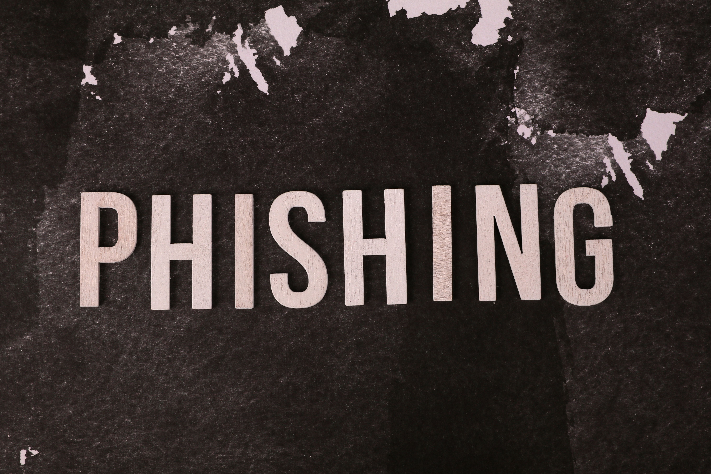

Cómo reconocer un correo de phishing

El phishing es un engaño que suplanta a una entidad o persona de confianza para conseguir información o provocar una acción, como abrir un enlace o descargar un archivo.
La urgencia es una señal de alerta
Un mensaje puede afirmar que tu cuenta será bloqueada si no actúas inmediatamente. Esa presión busca que respondas sin comprobar antes si la petición es auténtica.
El nombre del remitente no es suficiente
Que un correo muestre el nombre de un banco o una empresa no demuestra su origen. Revisa la dirección completa del remitente y desconfía de dominios que imiten al original.
Comprueba el destino de los enlaces
En un ordenador, situar el puntero sobre un enlace sin pulsarlo suele permitir ver su destino. Una dirección extraña es una señal de alerta, pero una dirección aparentemente correcta tampoco garantiza que el mensaje sea legítimo.
Cómo actuar ante un mensaje sospechoso
- No facilites contraseñas ni códigos de verificación.
- Evita abrir sus enlaces y archivos adjuntos.
- Accede al servicio desde su aplicación o escribiendo su dirección conocida en el navegador.
- Comprueba la petición por un canal oficial independiente.